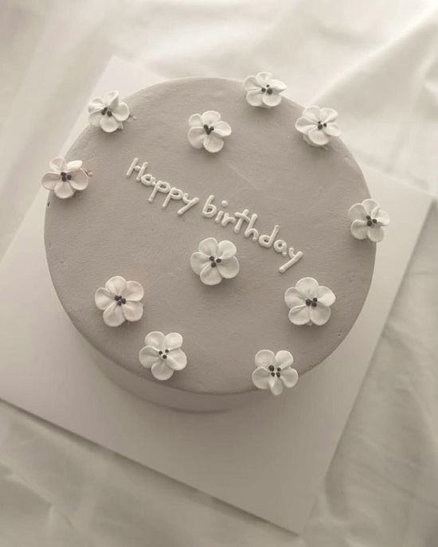
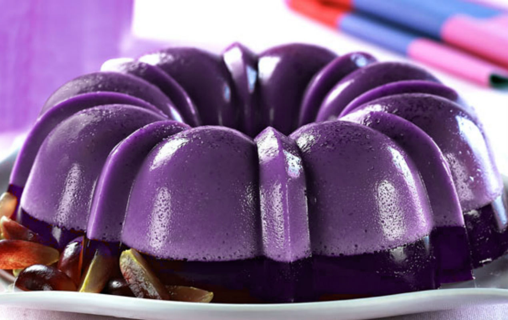
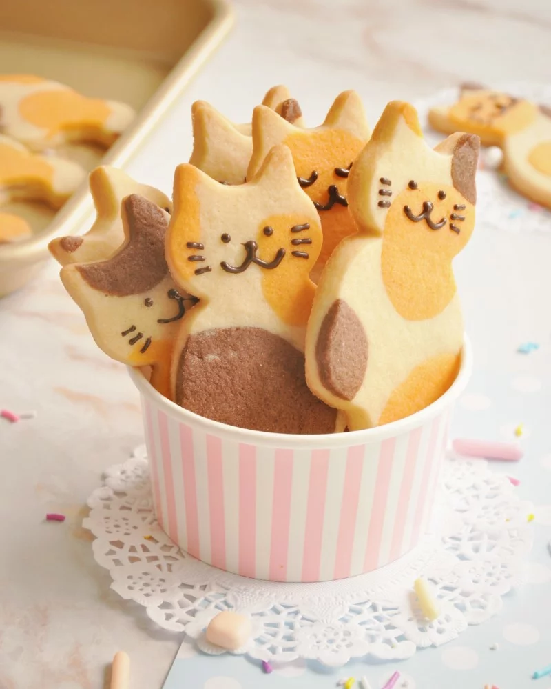

Tipos de reposteria
La repostería es la actividad u oficio que lleva a cabo el repostero. Éste se encarga de la preparación, elaboración y decoración de dulces y pasteles como pueden ser las galletas, tortas, pasteles o postres. La repostería se considera como un tipo de gastronomía, es decir, que se trata de una rama dentro de la cocina profesional, especializada en elaborar postres.
Pasteles
Los pasteles pueden que sean los tipos de postres más comunes y que más conocemos, ya que, no existe un cumpleaños sin su pastel. Los pasteles son un tipo de postre el cual se elabora a partir de una base de harina y manteca cocida al horno. Además se pueden decorar tanto en el interior como en el exterior.
Lo más comunes son las tartas y bizcochos.

Gelatinas
Las gelatinas son uno de los postres favoritos de los niños. Se trata de un producto de repostería el cual tiene una fácil preparación, además se suelen hacer mediante moldes con las figuras que deseamos obtener.

Flanes
De los tipos de pasteles cuya preparación es más sencilla, puedes agregarle algunas frutas y adornarlo a tu gusto para mejorar su impacto visual.
Cada uno de los tipos de flanes y sus nombres constan de un ingrediente fundamental, sin embargo los ingredientes que no debes olvidar a la hora de preparar tus flanes son los huevos, leche y el azúcar.

Macarons
Un macarrón o macaron es un tipo de galleta tradicional de la gastronomía francesa hecha de clara de huevo, harina de almendra, azúcar y azúcar glas. Desde el siglo XIX, los macarrones parisinos se presentan como una galleta con relleno de crema de mantequilla, jalea o ganache.
Tartas
Una torta o tarta es un tipo de pastel tradicionalmente redondo compuesto de una o más capas de masa dulce cocida al horno, rellenadas y decoradas con crema pastelera, trufa de chocolate, Nata montada, fruta, chocolate u otros ingredientes.
Galletas
La galleta es una preparación culinaria de pequeño tamaño, dulce o salada, horneada y hecha normalmente a base de harina de trigo, huevos, azúcar, mantequilla o aceites vegetales o grasas animales.
